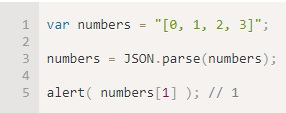
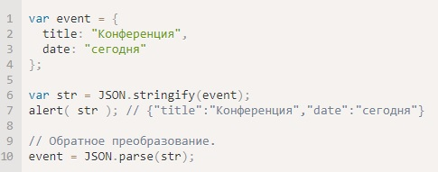

Это один из наиболее удобных форматов данных при взаимодействии с JavaScript. Если нужно с сервера взять объект с данными и передать его клиенту, то в качестве промежуточного формата – для передачи по сети, почти всегда используют именно его.
Основные методы для работы с JSON в JavaScript – это:
Вызов JSON.parse(str) превратит строку с данными в формате JSON в JavaScript-объект/массив/значение.
Например:
Метод JSON.stringify(value, replacer, space) преобразует («сериализует») значение в JSON-строку.
пример
